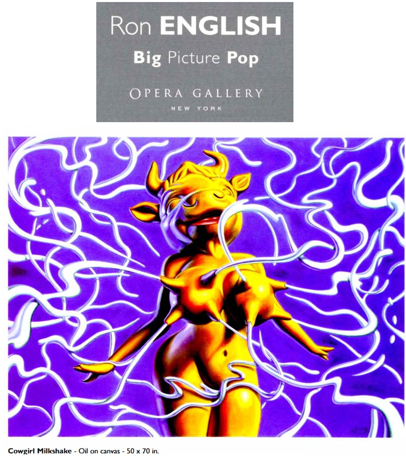

Exhibitions
Big Picture Pop, Opera Gallery, New York, New York, US, November 29–late December 2007.
Literature
Ron English, Abject Expressionism: The Art of Ron English (San Francisco: Last Gasp, 2007), p. 7. ISBN 978-0867196894.

Image. Richie, “Ron English’s Cathy Cowgirl is Alive!”, Clutter Magazine, 2012.

Image. “Photos: Ron English at Opera Gallery”, Juxtapoz, 2007.

Notes
Also known as Cowgirl Milkshake.
This work is reproduced in the exhibition catalogue for Big Picture Pop.
In Abject Expressionism, this work was erroneously reported as 50 × 70 inches.
Ancillary Documentation



Selected Online Circulation
Selected examples of the work’s online circulation, reproduction, or discussion. This list is not exhaustive; it is intended to document representative appearances of the image beyond formal exhibition and publication records.
Provenance
Private collection.